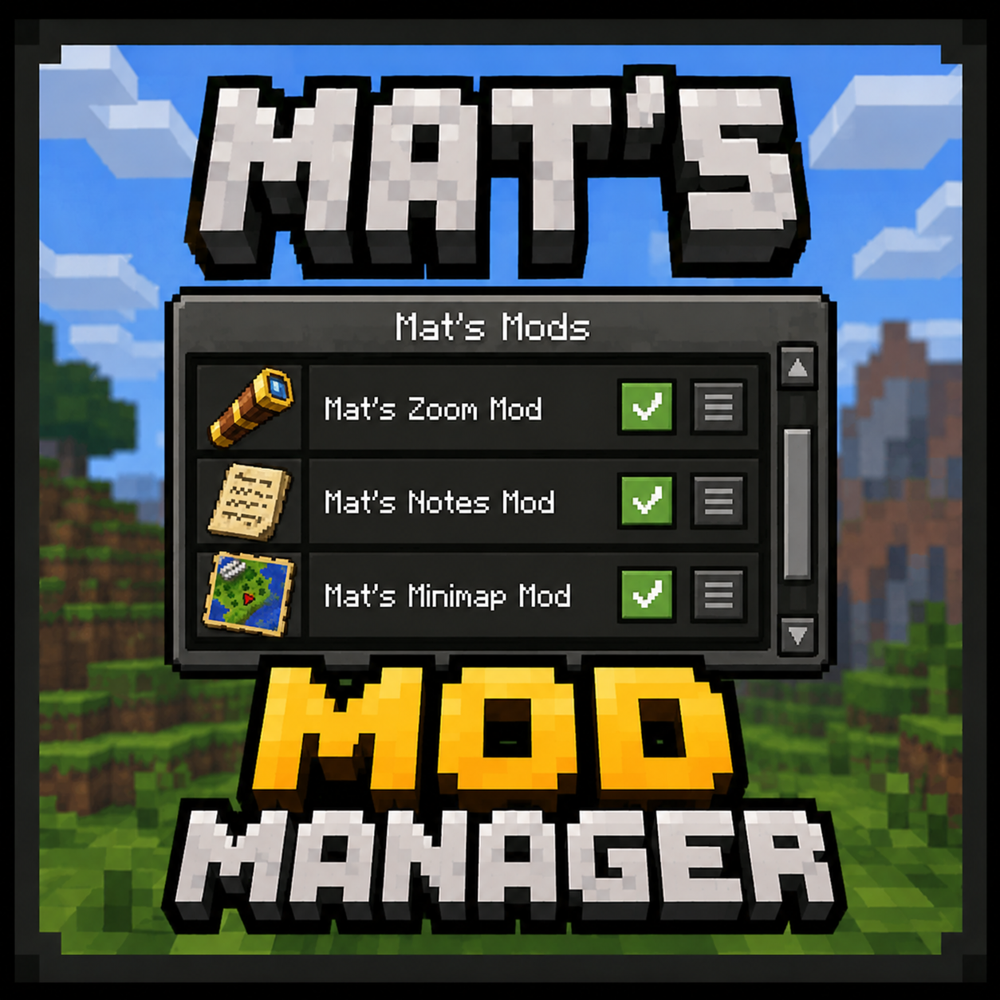
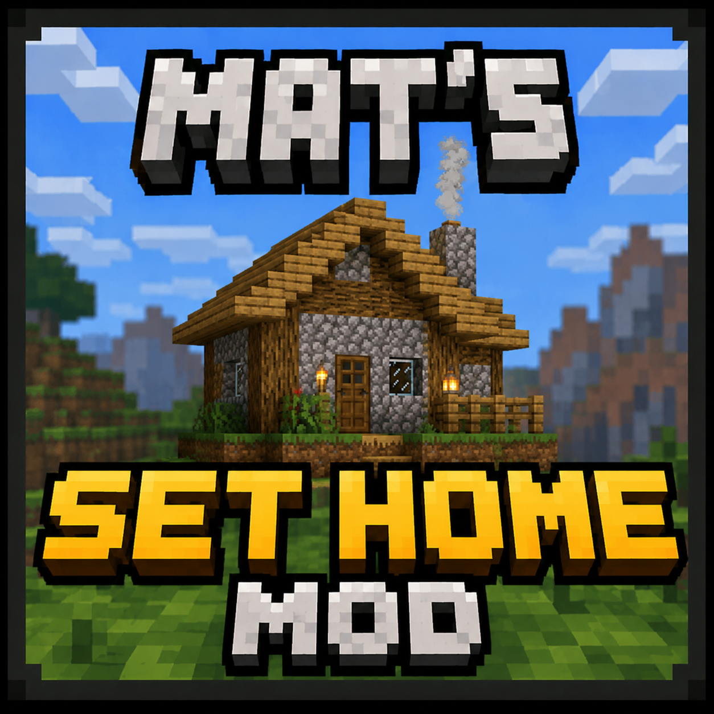

Mat's Zoom
A lightweight and customizable zoom mod with
smooth controls, adjustable zoom levels and
optional mouse wheel support.
Fabric Mods
Discover a growing collection of lightweight Minecraft mods designed to work seamlessly together.
Every mod is useful, easy to use and highly customizable, giving you more control over your Minecraft experience while preserving the vanilla feel.
Some of our available Projects
Each mod is designed to be simple, lightweight and easy to use. Choose a project below to learn more, view supported versions and download the latest release.
A lightweight and customizable zoom mod with
smooth controls, adjustable zoom levels and
optional mouse wheel support.

Including no creeper explotions, tree felling and more.
Manage, install and update all your Mat's Mods
from one simple and user-friendly application.

Save and instantly return to your favorite locations anywhere in your Minecraft world.
Create up to three homes and manage them easily through a simple in-game menu.
Latest News
Welcome to the official Mat's Mods website! Here you'll find the latest projects, downloads, updates and future plans all in one place.
Development continues on Kingdom Quests, a new adventure
mod where every quest helps expand and strengthen King
Martin's kingdom.
Final version will have over 100 unique quests
Every suggestion helps shape future updates. Community feedback plays a big role in deciding which improvements and features are added next.
Why Mat's Mods?
Mat's Mods is a collection of lightweight Minecraft mods created by a player, for players. Every mod focuses on useful features, customization, reliability and ease of use while staying true to the vanilla Minecraft experience.
Instead of adding hundreds of unnecessary features, each project is designed to solve a specific problem or improve everyday gameplay in a simple and intuitive way.
Every feature is created from real gameplay experience with the goal of making Minecraft more enjoyable without changing what makes the game special.
Your feedback helps shape every mod. I regularly listen to suggestions from the community and turn popular ideas into new features and improvements.
Simple installation, clear settings and intuitive controls make every mod easy to start using.
Features are optimized to minimize unnecessary impact on FPS, memory usage and loading times.
Projects receive bug fixes, compatibility updates and new features as development continues.
Suggestions and feedback help shape future updates, improvements and entirely new projects.
Get Started
Find the mods that fit your playstyle, check compatibility, and download the latest versions.
View all mods